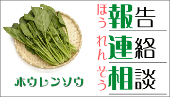
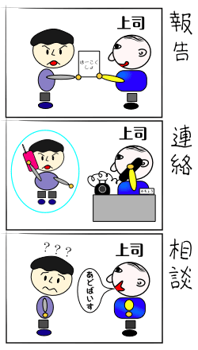

指示待ち人間とホウレンソウ
『指示待ち人間』になるなという要求と、『ホウレンソウ』を確実に行なえという要求は、矛盾した要求のようにも思われる。

『ホウレンソウ』とは、上司とのコミュニケーションの要素『報告（ホウこく）』『連絡（レンらく）』『相談（ソウだん）』からそれぞれ２文字をとったものである。いわゆる日本型の会社で重視されてきた仕事の基本マナーである。

これは、部下の側から見れば
- 報告：仕事の状況（進み方）や結果を上司に報告する
- 連絡：必要な情報をこまめに上司や関係者に連絡する
- 相談：自分だけで解決できない問題は上司に相談する
という業務の基本を示すものであり、上司の側から見れば、
- 報告：上司は仕事全体の状況を把握していなければならない
- 連絡：トラブルやミスを防ぐため情報を共有する必要がある
- 相談：上司はトラブルや問題を解決するために存在している
ということを意味している。
最近では、『ホウレンソウ』は、企業の古い体質を表わすものとして批判の対象とされることもある。問題は、『相談』において責任の所在があいまいになりやすいこと、『相談』が連鎖しやすいことである。
『ホウレンソウ』は、仕事全体の責任（権限）が上司にあり、個別の仕事の責任（権限）は部下にあることが前提になっている。たとえば、あなたが上司に『相談』して何らかの指示や助言を受けたとしても、個別の仕事の責任はあなたにある。上司に『相談』したから自分には責任がないと考えるならば、『指示待ち人間』と変わりがない。同様に、部下に事細かな『相談』を求める上司は、部下から権限だけでなく責任を奪ってしまい、部下を『指示待ち人間』にしてしまいがちである。また、あなたが上司に相談したときに、上司がそのまた上司に（そのまた上司がそのまた上司に……）相談しなければならないのであれば、意思決定に必要以上の時間と労力がかかってしまうだろう。
自分の責任と権限の範囲をひとりひとりが明確に知り、かつ理解していなければ、『相談』は無責任と無駄を生み出すだけである。したがって、『ホウレンソウ』を基本とするコミュニケーションは、新人から上司までを含めたスタッフ全員が同等以上の専門性（知識やスキル）を持っている場合に有効に機能するものと言える。そのため、新人のときは『ホウレンソウ』を細かく行ない、仕事を覚える（必要な知識やスキルを身につける）べきである。人並みに仕事ができるようになれば、あなたにはより大きな責任と権限が委ねられるようになる（はずである）。